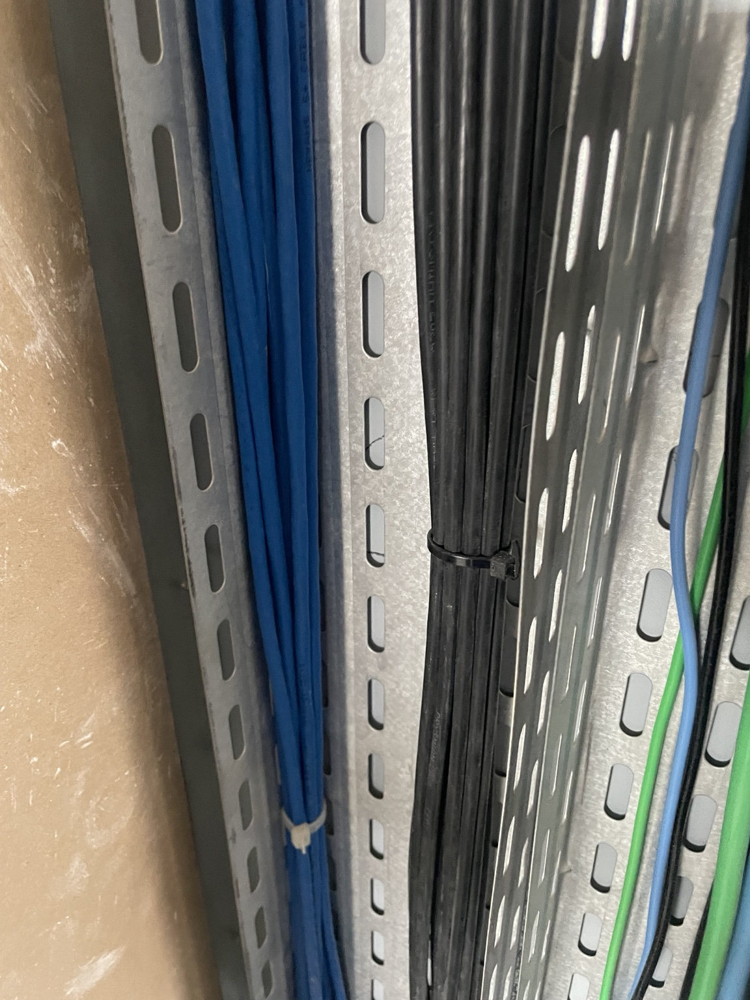
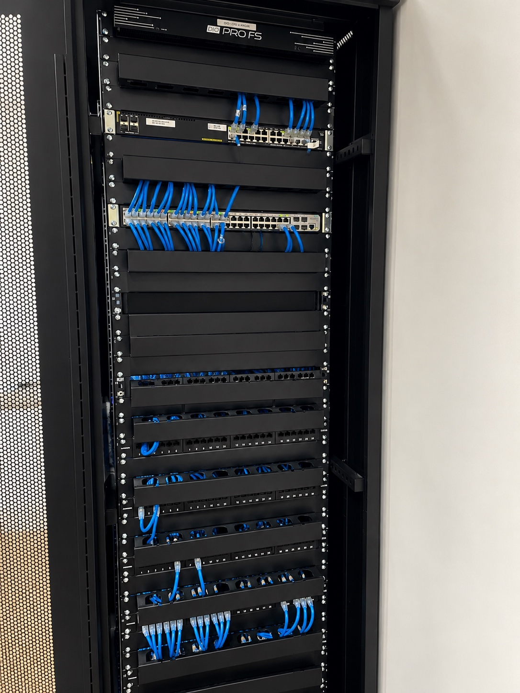
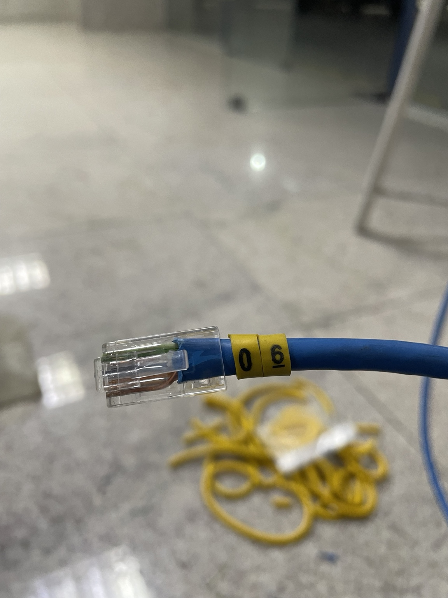
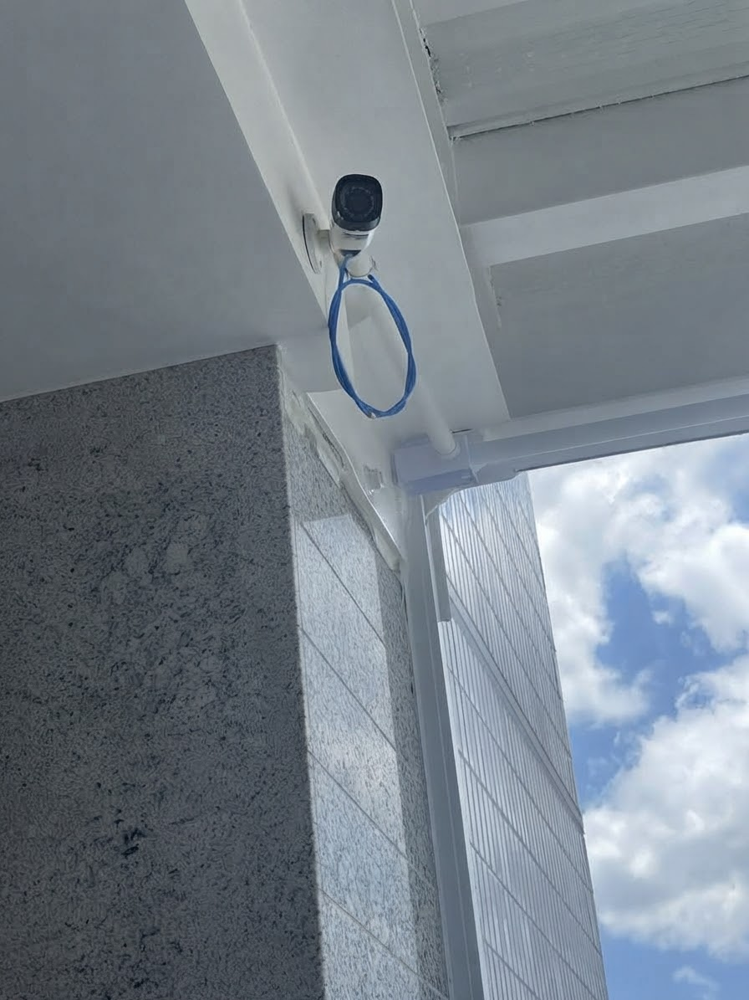
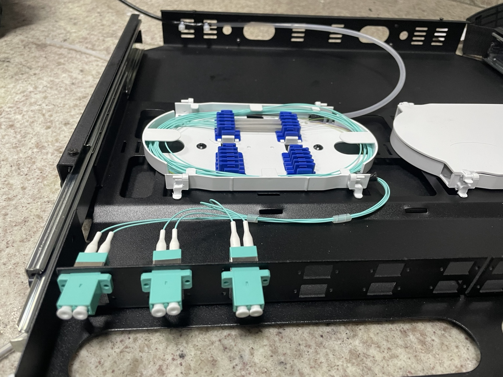
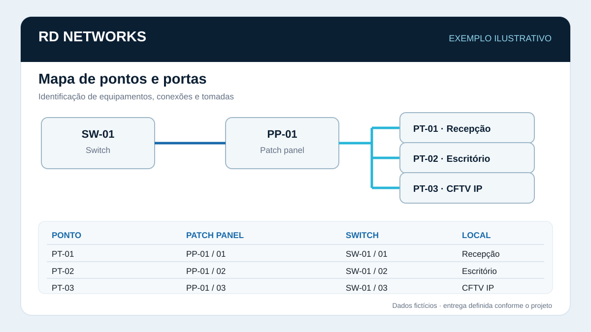
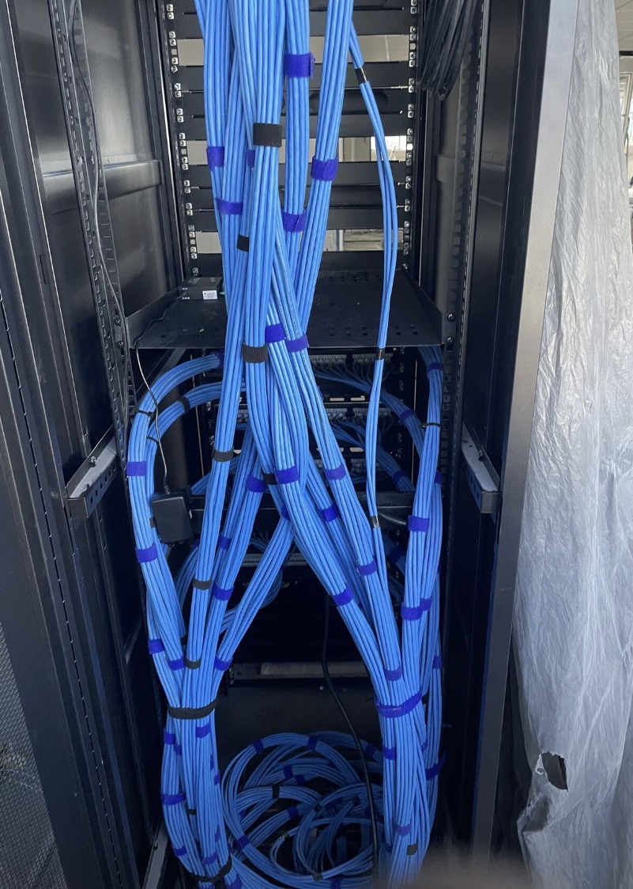
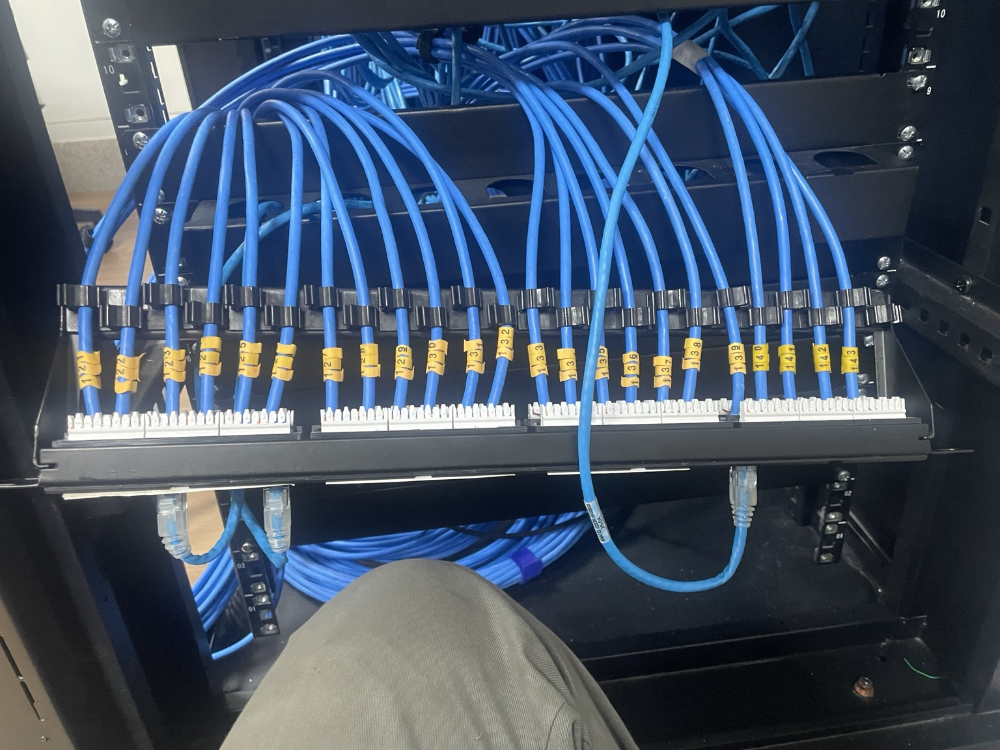
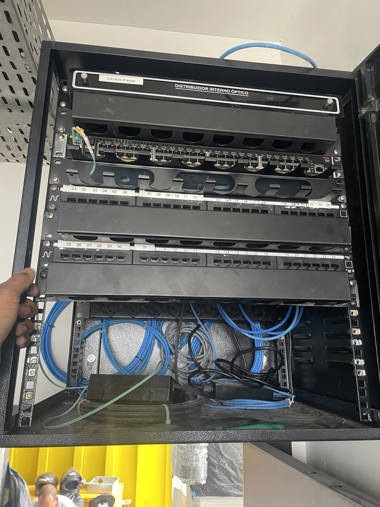

Foto real · portafolio RD Networks01Cableado estructurado
Tendido, encaminamiento y organización de cables para nuevos puntos, ampliaciones y adecuaciones.
INFRAESTRUCTURA DE REDES · BRASIL · SERVICIOS INTERNACIONALES BAJO CONSULTA
RD Networks es una empresa brasileña que trabaja con infraestructura física de redes y apoyo técnico de campo. Atendemos consultas de empresas, integradores y equipos de TI que necesitan apoyo en proyectos o servicios puntuales.
Los precios y la disponibilidad se confirman después de analizar el proyecto.
SERVICIOS
Instalación, ampliación y organización de infraestructura de red. Cada servicio se cotiza según el alcance, el lugar y las condiciones de ejecución.

Foto real · portafolio RD Networks01Tendido, encaminamiento y organización de cables para nuevos puntos, ampliaciones y adecuaciones.

Foto real · portafolio RD Networks02Montaje y organización física de racks, patch panels, guías, paneles ciegos y equipos.

Foto real · portafolio RD Networks03Instalación y terminación de puntos de red, conectores y tomas RJ45, con identificación cuando esté incluida en el alcance.

Foto real · portafolio RD Networks04Tendido y organización de cableado, preparación de puntos de red y montaje físico de cámaras IP según el alcance.

Foto real · portafolio RD Networks05Pasaje y tendido de cable de fibra óptica. No incluye fusión, empalme ni certificación de fibra.

Ejemplo ilustrativo06Registro de puntos, cables, patch panels y puertos identificados para facilitar la consulta y el mantenimiento.

Foto real · portafolio RD Networks07Reubicación de puntos, cables y conexiones por cambios de distribución o reorganización de espacios.
Disponibilidad: atención presencial con cita previa en la región de Vitória, Vila Velha, Serra y Cariacica, según agenda. Las consultas internacionales se evalúan por correo electrónico.
Las pequeñas adecuaciones eléctricas para equipos de TI se evalúan individualmente. No realizamos proyectos eléctricos, dimensionamiento de circuitos ni intervenciones en cuadros eléctricos.
ALIANZAS · APOYO TÉCNICO B2B
Buscamos establecer relaciones con empresas de TI, integradores, proveedores y equipos técnicos que necesiten apoyo para tareas de infraestructura física de redes.
PORTAFOLIO TÉCNICO
Una selección de trabajos y actividades de cableado, racks, conexiones, fibra óptica y CCTV IP realizados por RD Networks.


PROCESO DE TRABAJO
Primero entendemos la necesidad; después se evalúan las condiciones y se presenta una propuesta.
Indique el país, la ciudad, el servicio y la cantidad aproximada de puntos o equipos.
Revisamos la información disponible y las condiciones necesarias para el servicio.
El alcance, los valores, los plazos, los materiales y los gastos aplicables se detallan por escrito.
El trabajo solo se agenda después de acordar las condiciones y confirmar la disponibilidad.
CONTACTO COMERCIAL
Para consultas internacionales, contacte por correo electrónico. Envíe el país, la ciudad, el alcance aproximado y el plazo esperado.
Correo: rdnetworks2026@gmail.com
WhatsApp: +55 27 99255-1513
No se confirma disponibilidad, precio ni contratación hasta que ambas partes acuerden por escrito el alcance y las condiciones.
Puede copiar esta lista y enviarla por correo:
INFORMACIÓN IMPORTANTE
RD Networks tiene base en Brasil. Cualquier servicio presencial fuera de Brasil depende de evaluación del proyecto, disponibilidad, requisitos locales, logística y condiciones acordadas. No asumimos gastos ni compromisos financieros de terceros sin aceptación expresa y por escrito. Cada propuesta se prepara según el alcance, el país, la logística y la disponibilidad.